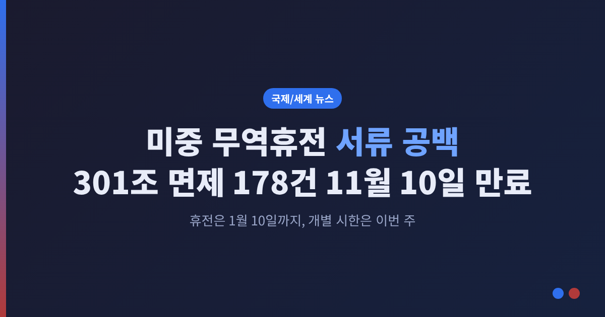
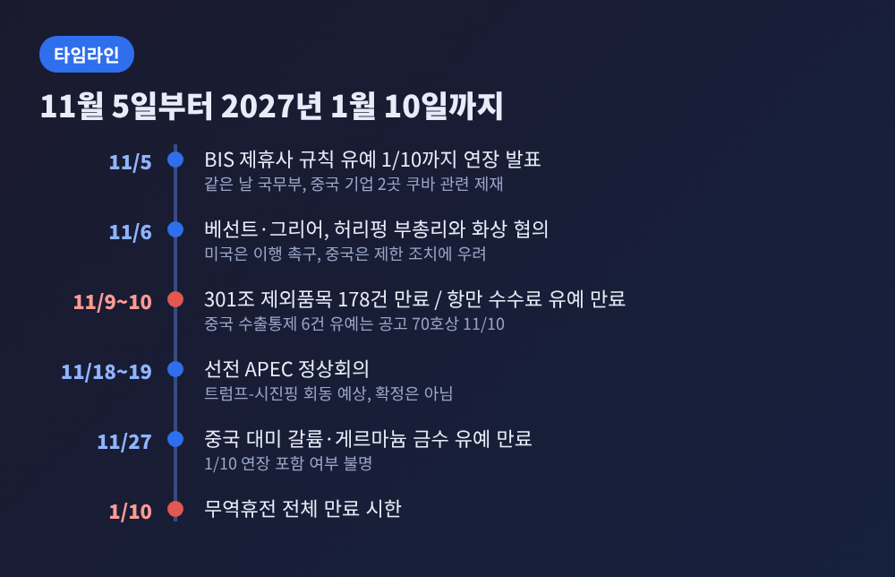
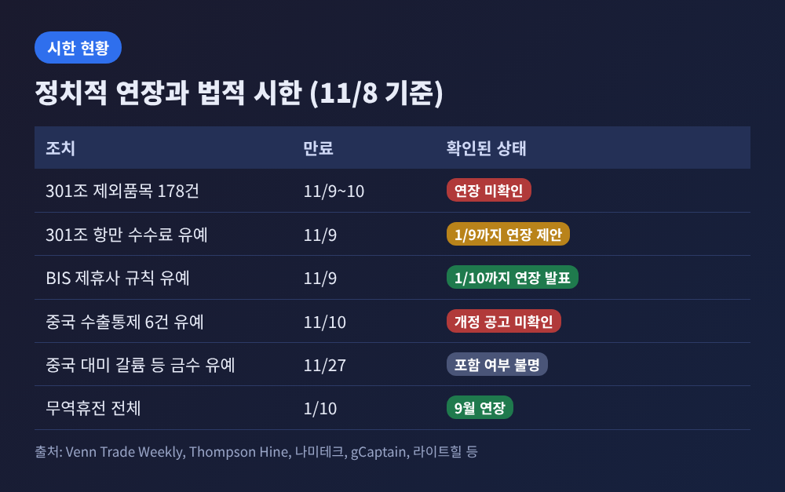
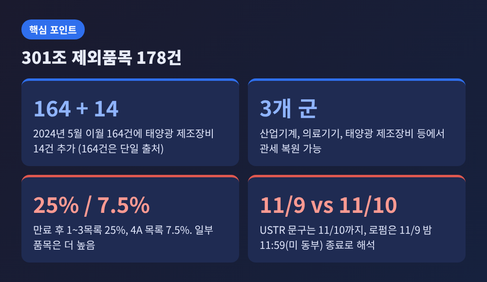
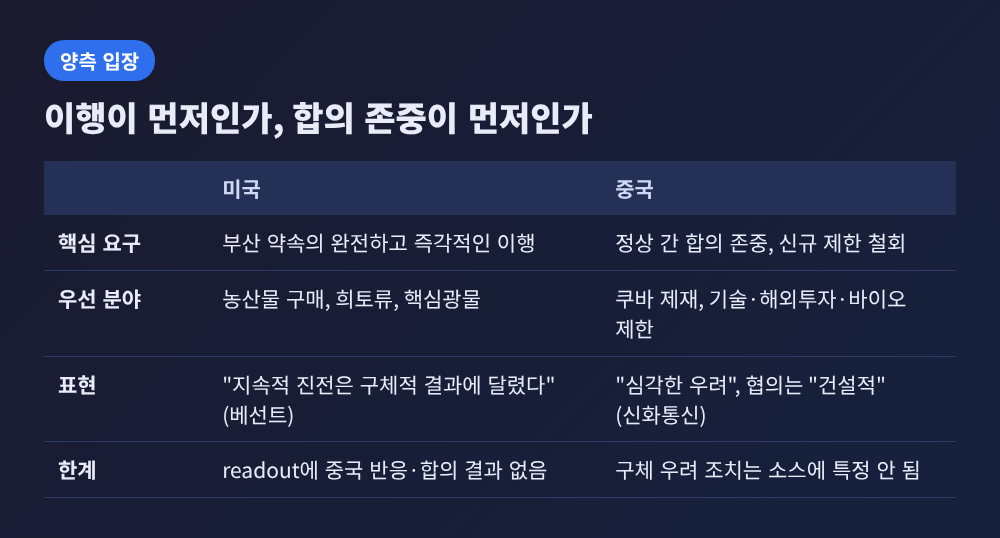
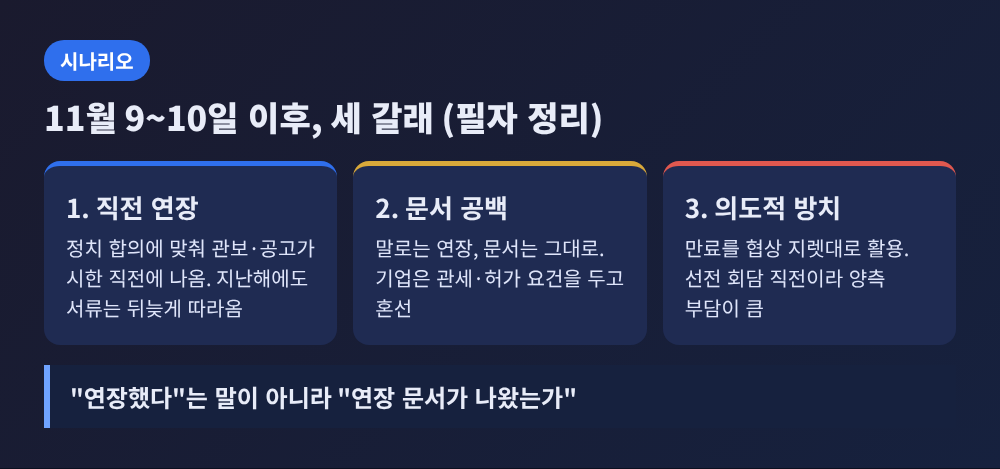

미중 무역휴전은 2027년 1월 10일까지 연장됐지만, 개별 조치의 시한은 이번 주말부터 줄줄이 돌아옵니다. 미국의 대중 301조 관세 면제 178건은 11월 9일 밤 또는 10일에 끝나고, 중국의 희토류 통제 유예도 11월 10일이 문서상 만료일입니다. 이번 글에서는 무슨 일이 있었는지, 왜 이 시한이 중요한지, 양측은 무엇을 주장하는지를 순서대로 정리해 보겠습니다.
11월 6일 금요일, 스콧 베선트 미 재무장관과 제이미슨 그리어 무역대표부(USTR) 대표가 허리펑 중국 부총리와 화상으로 협의했습니다. USTR 발표문에 따르면 그리어 대표는 중국이 "과거 약속을 완전히 이행할 구체적 조치"를 취해야 한다고 요구했습니다. 우선 분야로는 농산물 구매, 희토류, 기타 핵심광물을 꼽았습니다.
중국 쪽 설명은 결이 다릅니다. 신화통신 보도에 따르면 허리펑 부총리는 최근 미국의 대중 경제·무역 제한 조치에 "심각한 우려"를 전했습니다. 양측은 협의가 "솔직하고 심도 있으며 건설적"이었다고 평가했고, 협의 메커니즘을 계속 쓰며 이견을 관리하기로 했습니다. 다만 미국 발표문에는 중국의 반응도, 합의된 결과도 적혀 있지 않습니다.
협의 하루 전인 11월 5일에는 변수가 하나 더 생겼습니다. 미 국무부가 쿠바 군에 전자·보안 장비를 공급했다는 이유로 중국 기업 두 곳, 중국전자수출입공사(CEIEC)와 베이징 H&C 테크놀로지스를 제재했습니다. 중국 상무부는 제3국과의 거래를 이유로 자국 기업을 제재하는 것은 국제법 위반이며 정상 간 합의에 어긋난다고 밝혔습니다. 외교부도 필요한 조치를 취하겠다고 했습니다. 홍콩 RTHK는 쿠바 관련 사유로 중국 기업이 제재된 것이 처음이라고 전했는데, 이 부분은 단일 보도입니다.

지난 9월 시진핑 주석의 워싱턴 국빈 방문에서 양국은 무역휴전을 두 달 늘려 2027년 1월 10일까지로 하기로 했습니다. 스탠퍼드대 FSI의 마크 램버트 연구원은 이 방문이 휴전은 살렸지만 어려운 질문은 남겼다고 평가했습니다. 구체적인 경제 내용은 거의 발표되지 않았습니다.
여기서 문제가 생깁니다. 휴전 연장은 정치적 합의이고, 관세 면제나 수출통제 유예는 각각 별도의 문서에 날짜가 적혀 있습니다. 컨설팅 업체 Venn의 11월 3일 자 정리는 "휴전 연장이 유예된 개별 조치를 자동으로 연장하지는 않는다"고 짚었습니다. 정상들이 악수를 해도, 관보와 공고가 고쳐지지 않으면 기업은 옛 날짜대로 움직여야 합니다.
시한 상황은 이렇게 갈립니다. 미국 BIS(상무부 산업안보국)의 제휴사 규칙, 이른바 50% 규칙 유예는 11월 5일 2027년 1월 10일까지 연장이 발표됐습니다. 이 규칙은 수출 제한 명단 기업이 지분 50% 이상을 가진 해외 자회사에도 같은 제한을 적용하는 내용입니다. 항만 수수료 유예는 USTR이 2027년 1월 9일까지 연장을 제안했지만 확정 여부는 확인되지 않습니다. 중국의 2025년 10월 수출통제 6건 유예는 공고 70호에 "2026년 11월 10일까지"로 적혀 있고, 11월 2일 기준으로 이를 고친 공고는 없었습니다. 11월 5일 모틀리풀 보도 역시 중국이 공식 통지를 내지 않았다고 전했습니다. 미국 측은 9월 합의가 중국 통제까지 포함한다고 말하지만, 문서는 아직 보이지 않는 셈입니다.

301조 제외품목은 2018~2019년 미국이 중국산 수입품에 25% 안팎의 관세를 매기면서, 대체 공급처를 찾기 어려운 품목에 한해 예외를 인정한 제도입니다. 현재 남은 것은 178건입니다. 한 업계 자료에 따르면 2024년 5월 이월된 164건과 같은 해 9월 추가된 태양광 제조장비 14건으로 구성됩니다. 14건은 다른 로펌 자료로도 확인되지만 164건 수치는 단일 출처입니다. Venn은 산업기계, 의료기기, 태양광 제조장비 등에서 관세가 되살아날 수 있다고 정리했습니다.
만료일 표기는 소스마다 다릅니다. 2025년 11월 26일 USTR 보도자료는 "2026년 11월 10일까지"라고 적었습니다. 그러나 여러 무역 로펌은 이를 11월 9일 밤 11시 59분(미 동부시간)까지로 읽고, 10일 이후 통관분부터 관세가 붙는다고 안내합니다. 어느 쪽이든 이번 주 초가 분기점입니다. 만료 후 세율은 해당 품목이 속한 301조 목록을 따릅니다. 1~3목록은 25%, 4A 목록은 7.5%이며, 2024년 검토에서 오른 품목은 더 높습니다.
이 제외품목은 지난해 11월 부산 합의의 산물이었습니다. USTR은 2025년 11월 26일 기존 11월 29일이던 시한을 2026년 11월 10일로 늦췄습니다. 당시 고시는 추가 연장을 계속 검토할 수 있다고 했지만, 새 의견 수렴 절차는 열지 않았습니다. 11월 2일 기준 USTR의 추가 연장 발표는 없었고, 오늘 기준으로도 연장이 확인되지 않습니다. 확정 전까지는 "연장 가능성은 열려 있으나 미확인"으로 보는 것이 정확합니다.

미국의 요구는 "이행이 먼저"입니다. 베선트 장관은 부산에서 한 약속을 완전하고 즉각적으로 이행해야 하며 지속적 진전은 구체적 결과에 달렸다고 말했다고 보도됐습니다. 보도에 따르면 부산 합의에는 중국의 미국산 대두 구매와 희토류 수출통제 유예가 들어 있습니다. 대두 물량이 3년간 2,500만 톤이라는 수치는 한 매체에만 나옵니다.
중국의 요구는 "정상 합의 존중"입니다. 글로벌타임스는 중국 전문가들의 말을 빌려 미국이 정상 간 합의를 지킬 구체적 조치를 해야 한다고 전했습니다. 중국국제무역협회의 리융 연구원은 미국 정책이 정치화와 과도한 국가안보 개념의 영향을 받는다고 평가했습니다. 중국 상무부가 미국의 상호 관세 인하가 이행되어야 농산물 구매를 늘리겠다는 입장이라는 보도도 있으나 단일 출처입니다.
두 입장을 나란히 놓으면 구조가 보입니다. 미국은 중국이 먼저 사고, 풀라고 말합니다. 중국은 미국이 먼저 관세를 낮추고 제재를 멈추라고 말합니다. 어느 쪽도 완전히 틀렸다고 하기는 어렵습니다. 각자 자국 기준에서는 상대가 합의를 어기고 있다고 보기 때문입니다.

한 가지 짚어둘 점이 있습니다. 중국 희토류 통제가 11월 10일에 전부 끝나는 것은 아닙니다. 2025년 4월 공고 18호가 정한 중희토류 7종 허가제는 유예된 적이 없어 지금도 유효합니다. 11월 10일에 문서상 만료되는 것은 2025년 10월 확대분이고, 11월 27일에는 미국 대상 갈륨·게르마늄·안티모니 금수 유예가 별도로 끝납니다. 이 날짜도 1월 10일 연장에 포함되는지 어느 정부도 밝히지 않았습니다.
선전 APEC 정상회의는 11월 18~19일입니다. AP 보도에 따르면 트럼프 대통령과 시 주석은 올해 세 번째로 만날 것으로 예상되지만 공식 확정은 아닙니다. 중국 외교부는 푸틴 대통령까지 포함한 3자 회동을 논의 중이라고 11월 7일 처음 확인했습니다. 스팀슨센터의 선윤 연구원은 회동이 성사될 것으로 보면서도 "중국은 이미지는 원하되 비용은 치르고 싶지 않아 한다"고 평가했고, 워싱턴 민주주의수호재단(FDD)의 크레이그 싱글턴 연구원은 외교적 성과가 줄어드는 사진 찍기에 그칠 수 있다고 봤습니다.
시나리오는 필자의 정리이며, 세 갈래로 나눠 볼 수 있습니다. 첫째, 시한 직전 연장입니다. 지난해에도 정치적 발표가 10월 30일에 나왔고 서류는 시한 직전에야 나왔다는 분석이 있습니다. 둘째, 말은 연장이지만 문서는 비어 있는 상태입니다. 이 경우 기업은 관세와 허가 요건을 놓고 며칠간 혼란을 겪습니다. 셋째, 한쪽이 의도적으로 만료를 방치하는 경우입니다. 협상 지렛대로 쓰는 셈이지만 선전 회담 직전이라 양측 모두 부담이 큽니다. 현재 소스로는 세 가지 중 어느 쪽이 될지 판단하기 어렵습니다.

한국 독자께는 두 가지를 권합니다. 먼저 이번 주 USTR 연방관보 공지와 중국 상무부 공고가 실제로 나오는지 확인하시길 권합니다. 다음으로 11월 18~19일 선전 회담에서 휴전이 1월 이후로 다시 늘어나는지, 아니면 구체적인 구매 계획이 나오는지를 보시면 좋겠습니다.
정리하면 이렇습니다. 예전에는 정상이 합의하면 실무는 따라온다고 여겨졌습니다. 지금은 합의와 서류 사이의 간격이 협상의 변수가 됐습니다. 결국 이번 주에 볼 것은 "연장했다"는 말이 아니라 "연장 문서가 나왔는가"입니다. 그 답은 며칠 안에 나올 것입니다.